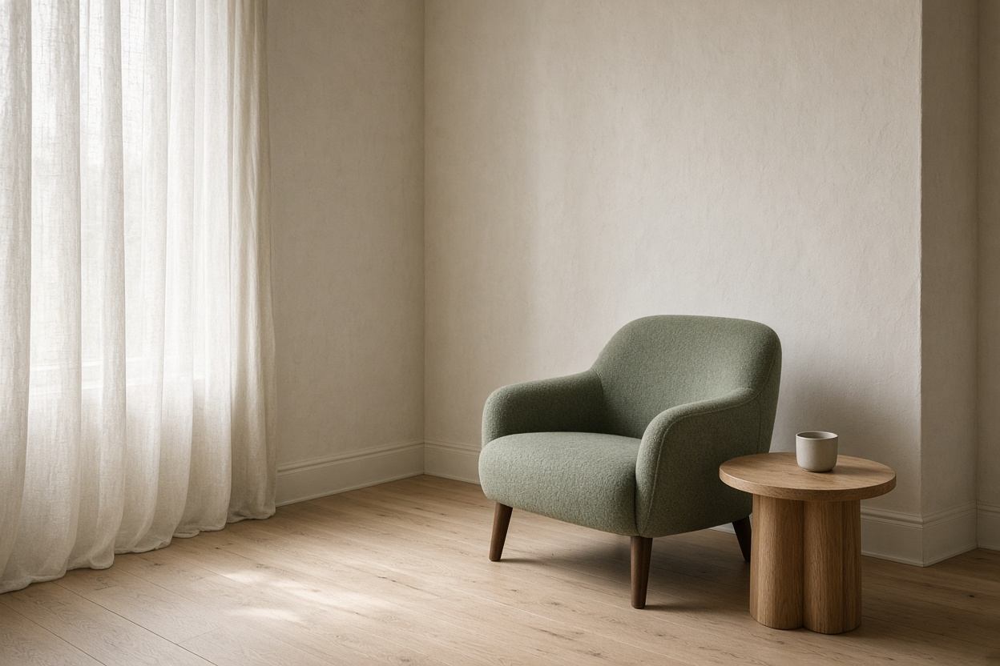
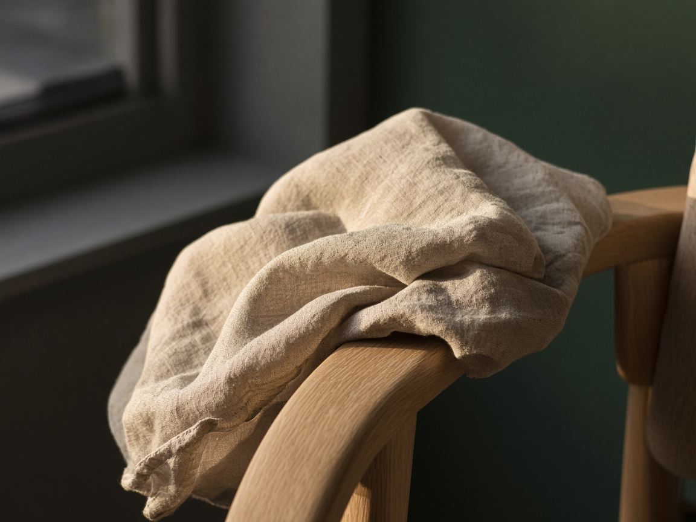

Henvisning
Fastlege, annen primærlege eller en spesialist henviser. Uten henvisning kan ikke klinikken ta deg inn.
Smerteklinikk · Majorstuen
Smerteklinikken holder til i Kirkeveien på Majorstuen. Legene har driftstilskudd fra Helse Sør-Øst, så du betaler vanlig egenandel, med tillegg for medisiner og utstyr. Alle pasienter må ha henvisning.

Stemningsbilde. Klinikken kan bytte inn egne fotografier.
Klinikken er spesialisert på utredning og behandling av kroniske, langvarige smerter. Fastlegen, en annen primærlege eller en spesialist sender henvisningen. En smertelege vurderer den.
Smerter som har vart lenge, og som fastlegen vil ha vurdert videre.
Smerter med mulig nervesystemopphav, der en nevrologisk vurdering er aktuell.
Hodepine og andre plager der nevrologisk spesialistvurdering kan avklare veien videre.
Smerter etter skade, operasjon eller annen sykdom, når forløpet er blitt langvarig.
Ventetiden avhenger av henvisningsgrunn og kapasitet. Klinikken prioriterer henvisninger fra eget geografisk område.
Fastlege, annen primærlege eller en spesialist henviser. Uten henvisning kan ikke klinikken ta deg inn.
En smertelege leser henvisningen og avgjør om, og når, du får time.
Utredning og behandling skjer i samhandling med legen som henviste, og med andre behandlere når det trengs.
Fagmiljøet

Besøk
Ring for å spørre om time, henvisning eller praktiske ting. Ikke skriv sykehistorie i et åpent skjema på nettet. Journalen føres hos klinikken, ikke på denne siden.